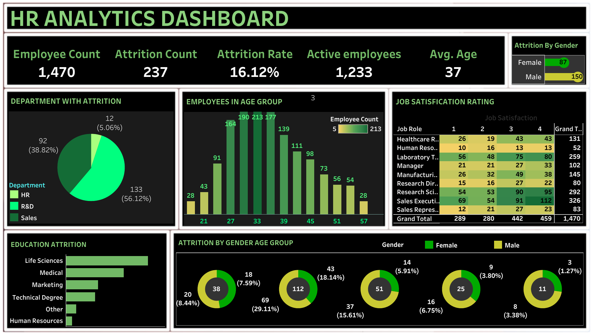
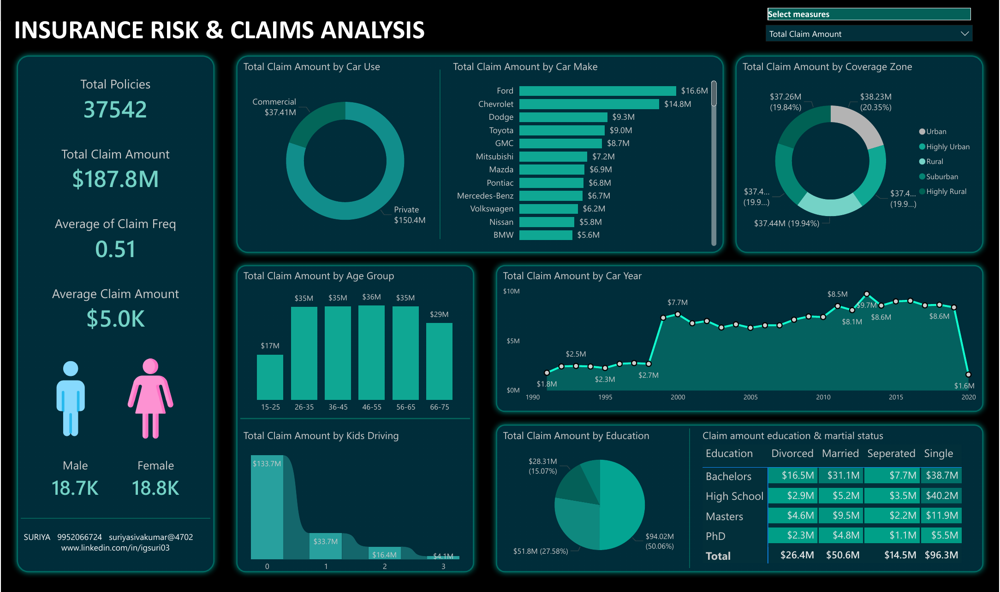
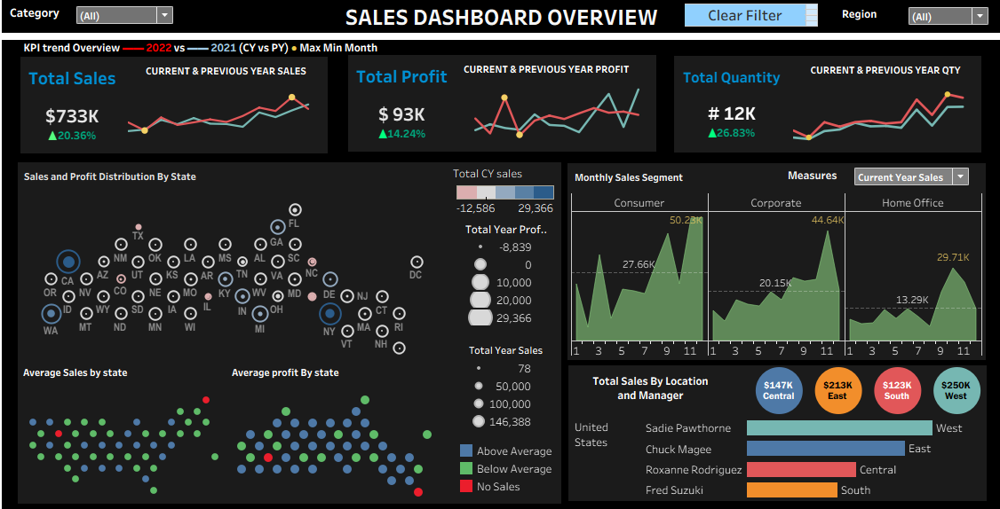
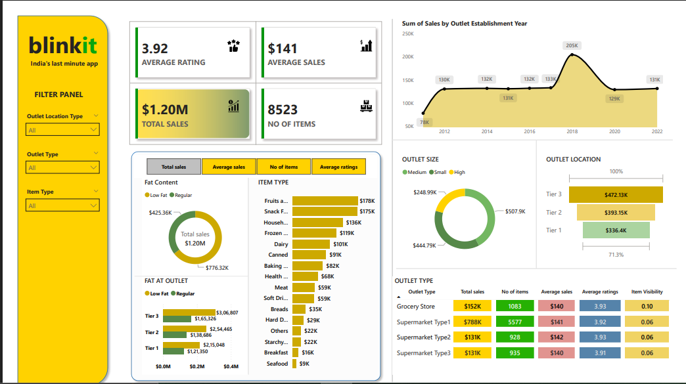

Power BI
DAX · Power Query · Data Modeling · KPI Reporting · Power BI Service · Interactive Dashboards
DATA ANALYST · BUSINESS INTELLIGENCE · HEALTHCARE ANALYTICS
I'm Suriya S, a Data Analyst with 3 years 10 months of experience building KPI-driven reports, dashboards and data solutions with Power BI, SQL, Python, Tableau and Excel.
PROFILE
I work at the intersection of business requirements, data quality and visualization.
My professional experience includes healthcare claims, insurance, provider and hospital-related data. I use SQL and Python for extraction, cleaning, transformation and validation, then turn the results into interactive Power BI and Tableau dashboards.
I focus on building reliable metrics, understanding the business question behind the data, and communicating insights clearly to stakeholders.
TOOLKIT
DAX · Power Query · Data Modeling · KPI Reporting · Power BI Service · Interactive Dashboards
Joins · CTEs · Window Functions · Aggregations · Data Cleaning · Duplicate Detection · Validation
pandas · NumPy · Cleaning · Transformation · Validation · Exploratory Analysis · Basic Automation
Interactive Dashboards · Trend Analysis · Visual Analytics · KPI Reporting
Pivot Tables · VLOOKUP · XLOOKUP · Date Functions · TAT Calculations · Conditional Formatting
Claims Analytics · Provider Data · Insurance Data · Reporting · Data Quality
SELECTED WORK

Interactive Tableau dashboard analyzing employee attrition, department, gender, age groups, job roles, education and job satisfaction.

Power BI dashboard built from a business requirement to centralize policyholder and claim data. Analyses claim amount and policy counts by car use, car make, coverage zone, age group, car year, kids driving, education and marital status.

An interactive Tableau dashboard for exploring sales performance, trends and business KPIs through visual analytics.
Practical data preparation and analysis using pandas and NumPy, covering exploration, missing values, duplicate handling, filtering, aggregation and business-oriented analysis.

Used SQL for data preparation and validation and Power BI for interactive dashboard development. Analysis covers total sales, average sales, item count, ratings, outlet type, outlet location, outlet size and product categories.
CAREER
DOMAIN
Claims validation, status analysis, duplicate claim identification, payment analysis and TAT.
Provider, practitioner and insurance data analysis, validation and reporting.
KPI-driven Power BI and Tableau reporting built from stakeholder requirements.
CONTACT
Open to opportunities in Data Analytics, Business Intelligence, Power BI and Healthcare Analytics.